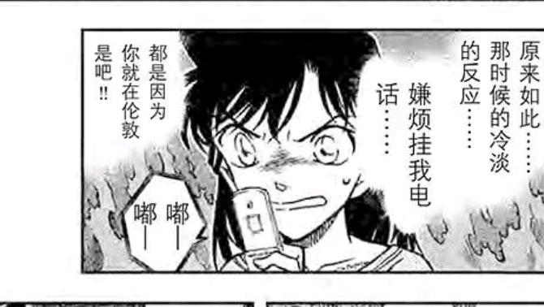

今天是2024年7月2日，而伦敦篇发生在2010年7月1～3日，真是良辰吉日，于是有了此贴。
由于伦敦篇信息实在过多，一些经典的理论（例如Miss Glass＝哀，UR Satan之类）大家想必也耳熟能详了，因此本文将从一些更加古怪，奇特，有趣的角度分析伦敦篇的方方面面。
目录：
0、创作之前：青山如何设计伦敦篇的新兰哀暗号？
1、伦敦之前：柯哀关系对小兰的刺激
2、伦敦起始：小哀第三颗解药的布置
3、7月1日：小兰的蓄意爆发与柯南的不堪忍受
4、7月2日：被拧下的头颅：小兰与Satan暗号
5：7月3日：与兰哀交锋同步的格拉斯的网球赛
直接开始更新。
由于伦敦篇信息实在过多，一些经典的理论（例如Miss Glass＝哀，UR Satan之类）大家想必也耳熟能详了，因此本文将从一些更加古怪，奇特，有趣的角度分析伦敦篇的方方面面。
目录：
0、创作之前：青山如何设计伦敦篇的新兰哀暗号？
1、伦敦之前：柯哀关系对小兰的刺激
2、伦敦起始：小哀第三颗解药的布置
3、7月1日：小兰的蓄意爆发与柯南的不堪忍受
4、7月2日：被拧下的头颅：小兰与Satan暗号
5：7月3日：与兰哀交锋同步的格拉斯的网球赛
直接开始更新。
0、创作之前：青山如何设计伦敦篇的新兰哀暗号？
综合各种访谈，我们可以知道青山早就想画柯南在伦敦的故事了，至于在伦敦表白则有可能是受到10年智能机的影响，但总之青山此时的任务有两个：
1、柯南在伦敦→需要设计福尔摩斯相关案件，最好顺便当伦敦旅游指南。
2、新一要表白，但是却反而促进柯哀关系。
不难发现，草地女王（网球）并直接不属于上述两种目的，如果是英国，使用足球意象效果一定更好，而草地女王的原型甚至是德国人，那么，是青山先设计好整个案件，再把草地女王放进来吗？
答案是否定的，因为案件中存在小五郎手举地图的一幕。
【这一幕里，所有地点都在伦敦真实存在，地图也是真的，换而言之，是先确定了网球，再决定这个暗号地图】
【草地女王＞整个案件】
这就是青山的创作思路，也就是连案件都没有的时候，青山就打算让来自德国的Miss Glass登场了，只为了蹭glass＝grass的眼睛梗，草地女王，或者说灰原哀的优先级极高。
综合各种访谈，我们可以知道青山早就想画柯南在伦敦的故事了，至于在伦敦表白则有可能是受到10年智能机的影响，但总之青山此时的任务有两个：
1、柯南在伦敦→需要设计福尔摩斯相关案件，最好顺便当伦敦旅游指南。
2、新一要表白，但是却反而促进柯哀关系。
不难发现，草地女王（网球）并直接不属于上述两种目的，如果是英国，使用足球意象效果一定更好，而草地女王的原型甚至是德国人，那么，是青山先设计好整个案件，再把草地女王放进来吗？
答案是否定的，因为案件中存在小五郎手举地图的一幕。
【这一幕里，所有地点都在伦敦真实存在，地图也是真的，换而言之，是先确定了网球，再决定这个暗号地图】
【草地女王＞整个案件】
这就是青山的创作思路，也就是连案件都没有的时候，青山就打算让来自德国的Miss Glass登场了，只为了蹭glass＝grass的眼睛梗，草地女王，或者说灰原哀的优先级极高。
2024-07-02 10:34 | 乐以轩🌟:ps：小五郎这个画图的桥段和m13时一模一样，只是m13小五郎画出来的是北斗七星，伦敦这里是网球拍。2024-07-02 11:46 | 🌐之徙:回复 乐以轩🌟 :其实这个桥段最早出自警视厅恋爱物语3，由小哀完成2024-07-03 12:39 | 頔丣萌訣:为什么grass＝glass呀2024-07-03 14:15 | 阿库拉9548:回复 頔丣萌訣 :谐音，2024-07-09 06:51 | 贴吧用户_5XJeX2M:回复 頔丣萌訣 :日语里这俩读音一样
新阶段开始啦
那么，Satan暗号呢？
设计上可能不如草地女王优先，但也很靠前。
犯人的暗号一共四层：
诗句-地点，这是第一层，是服务于旅游业的，青山在炫耀自己去过伦敦取材，我们注意到一部分地点并不出名，可能青山为了确保网球拍好看，牺牲了一部分地点知名度，另外显然是先有地点再有诗句的，网球又先于地点，草地女王地位最高。
地点-物品，这层比较简单，基本靠路人提示，青山并没有精心设计。
物品-福尔摩斯，这层也是必要的，毕竟要有福尔摩斯元素，此处的设计和地点相互独立，完全可以随心所欲使用不同的福尔摩斯名言（注意这一点，很重要）
福尔摩斯-字母，这一层服务于作案的时间，看起来好像是随意设计的，然而字母其实受到大量限制：首先字母不能过长或过短，需要与福尔摩斯的数量相匹配，案件中字母为Saturn，六个字母代表星期六【土星】，但这个过程是强行的，明明可以直接设置成Sunday（7月4日，同样是柯南的假日），犯人并非日本人，完全没道理使用土星作为破解方式，因此土星必然是为了蹭Satan而设计的，我们就得到了青山设计本案全部要素的三条轴。
草地女王-网球拍-伦敦地点
Satan-Saturn-案件的日期-草地女王比赛的日期
福尔摩斯要素自成一条轴
因为要写Miss Glass，案发地点才是网球场而不是足球场；因为要写Satan，案发时间才是周六而不是周日，时间和地点都由这两个要素决定，而暗号散落的地点则完全由Miss Glass决定，因此可以下结论：
【在伦敦篇各要素中，除了福尔摩斯，Miss Glass影响最大，Satan次之，其他全部靠后】
我甚至觉得，之所以伦敦众人全都是希腊罗马神话，也是因为密涅瓦＝Miss的谐音。
设计上可能不如草地女王优先，但也很靠前。
犯人的暗号一共四层：
诗句-地点，这是第一层，是服务于旅游业的，青山在炫耀自己去过伦敦取材，我们注意到一部分地点并不出名，可能青山为了确保网球拍好看，牺牲了一部分地点知名度，另外显然是先有地点再有诗句的，网球又先于地点，草地女王地位最高。
地点-物品，这层比较简单，基本靠路人提示，青山并没有精心设计。
物品-福尔摩斯，这层也是必要的，毕竟要有福尔摩斯元素，此处的设计和地点相互独立，完全可以随心所欲使用不同的福尔摩斯名言（注意这一点，很重要）
福尔摩斯-字母，这一层服务于作案的时间，看起来好像是随意设计的，然而字母其实受到大量限制：首先字母不能过长或过短，需要与福尔摩斯的数量相匹配，案件中字母为Saturn，六个字母代表星期六【土星】，但这个过程是强行的，明明可以直接设置成Sunday（7月4日，同样是柯南的假日），犯人并非日本人，完全没道理使用土星作为破解方式，因此土星必然是为了蹭Satan而设计的，我们就得到了青山设计本案全部要素的三条轴。
草地女王-网球拍-伦敦地点
Satan-Saturn-案件的日期-草地女王比赛的日期
福尔摩斯要素自成一条轴
因为要写Miss Glass，案发地点才是网球场而不是足球场；因为要写Satan，案发时间才是周六而不是周日，时间和地点都由这两个要素决定，而暗号散落的地点则完全由Miss Glass决定，因此可以下结论：
【在伦敦篇各要素中，除了福尔摩斯，Miss Glass影响最大，Satan次之，其他全部靠后】
我甚至觉得，之所以伦敦众人全都是希腊罗马神话，也是因为密涅瓦＝Miss的谐音。
2024-07-02 21:20 | RainZer0:案发时间这里可能有点问题，因为现实世界中网球四大满贯的时间设置都是女单决赛设置在当地时间周六下午，男单决赛设在周日下午，青山刚昌做过功课的话应该是清楚的。所以只要定了案发地在网球女单决赛，那这一天就必须是星期六，而不是先有“Satan”后有“Saturn”。2024-07-02 23:09 | 🌐之徙:回复 RainZer0 :这倒是有可能，感谢补充2024-07-02 23:10 | 🌐之徙:回复 RainZer0 :不过这样的话，果然是Satan＜周六＜网球，网球确实是最先设计的2024-07-04 00:30 | 上総守信長ºº:回复 🌐之徙 :对，不影响主结论。我非常喜欢这种偶然得来的联想，特别是这种融入作品完美契合的
码住
赶上直播！蹲！
有动静了踹我一脚
1、伦敦之前：柯哀关系对小兰的刺激
伦敦前最后一次新兰互动是白色情人节，新一极为敷衍地送上了喉糖（具体可以参考网页链接 ）
此外，在时间上位于伦敦篇之前的M15特典（如果进入正史），小兰赠送了礼物却遭到新一的冷漠对待（该礼物已经被服部掉包）
在【河童之梦】中，小兰甚至遭到了柯南的冷漠对待。
而小兰见证下，伦敦前的柯哀互动非常多，具体包括：
【赤壁案】知道小哀可能有危险时，柯南直接滑板冲锋，之后小哀来到事务所，大和敢助把事情解释清楚了，此事被小兰所知晓。
【四神侦探团】小兰在电视上看到了柯哀共同对抗基德。
【伦敦之前】柯南知道自己要去伦敦，跑去博士家表现自己的兴奋，甚至还逗留博士家以至于没坐同一班飞机。
（我认为进入正史的）【M15】小兰见证柯哀的大量互动，包括【M15特典】。
网页链接
以小兰这个“我都有点嫉妒了”的性格，和【真第一集】所展示的大小娃娃偏好，小兰绝对不可能被新一的喉糖所敷衍，更何况在柯哀关系的比较下新一对自己的态度实在冷漠，伦敦篇的火种已经准备完毕，保暖手套之后是一小时的翻箱倒柜，路灯反射后是三天的赤木量子质问，而喉糖之后就该是伦敦篇成千上万的生命了。
伦敦前最后一次新兰互动是白色情人节，新一极为敷衍地送上了喉糖（具体可以参考网页链接 ）
此外，在时间上位于伦敦篇之前的M15特典（如果进入正史），小兰赠送了礼物却遭到新一的冷漠对待（该礼物已经被服部掉包）
在【河童之梦】中，小兰甚至遭到了柯南的冷漠对待。
而小兰见证下，伦敦前的柯哀互动非常多，具体包括：
【赤壁案】知道小哀可能有危险时，柯南直接滑板冲锋，之后小哀来到事务所，大和敢助把事情解释清楚了，此事被小兰所知晓。
【四神侦探团】小兰在电视上看到了柯哀共同对抗基德。
【伦敦之前】柯南知道自己要去伦敦，跑去博士家表现自己的兴奋，甚至还逗留博士家以至于没坐同一班飞机。
（我认为进入正史的）【M15】小兰见证柯哀的大量互动，包括【M15特典】。
网页链接
以小兰这个“我都有点嫉妒了”的性格，和【真第一集】所展示的大小娃娃偏好，小兰绝对不可能被新一的喉糖所敷衍，更何况在柯哀关系的比较下新一对自己的态度实在冷漠，伦敦篇的火种已经准备完毕，保暖手套之后是一小时的翻箱倒柜，路灯反射后是三天的赤木量子质问，而喉糖之后就该是伦敦篇成千上万的生命了。
2024-07-05 00:28 | 黑暗刺猬-夏特:路灯反射……应该是【车灯照影】吧
密涅瓦（Minerva）是罗马的月亮女神，月亮又和兔子强挂钩，所以草地女王可以说是从头到脚都在暗示哀酱
2、伦敦起始：小哀第三颗解药的布置
此处需要引入大概率进入正史的OVA【伦敦秘密指令】，该篇由于涉及冲矢昴（尚未暴露身份），没有青山的监督是很难做出来的，也就是说，在7月1日这一天，小哀从步美家醒来，最后截获了博士的三明治。
因此，似不应该存在“解药产量很少，小哀一开始只有两颗，后来才补充到3颗”的假说，有希子在7月1日已经前往伦敦，小哀联系有希子的时间应该在6月30日，交给柯南药之后就联系有希子。
此处产生一个疑问，既然小哀有三颗药，一开始就给柯南不就好了吗？或者给博士似乎也可以，难道是小哀故意博有希子好感？
这类观点也是部分稍有脑筋的SR之思路，而这个思路充分说明了这些人不了解柯南，在伦敦这个100颗药阶段，有第三颗药的情况下柯南就会需要第四颗，这和已经经历更多事情的红修是不同的，红修时小哀可以信任柯南不乱吃药，但伦敦绝对不行。
同时，也不能交给博士，博士向来对柯南做不了多少约束，更是经常把物品放在柯南或小哀的背包里（不久前【日记演奏的秘密】，博士就把手机放小哀身上了），这颗药有且只有交给有希子小哀才能放心，是最后的保险，将三颗药分开放置也确实是小哀的安排，用心十分良苦。
有人经常纠结小哀哪里来的有希子电话，其实哪里来的不重要，能随时联系才是重要的，另外有希子这段时间需要经常帮猫哥化妆，估计直接上门拿药了，有希子和小哀的故事可没有全画出来，从有希子这个有点悲伤的表情看，她可能看到了小哀令人心疼的一面吧。
此处需要引入大概率进入正史的OVA【伦敦秘密指令】，该篇由于涉及冲矢昴（尚未暴露身份），没有青山的监督是很难做出来的，也就是说，在7月1日这一天，小哀从步美家醒来，最后截获了博士的三明治。
因此，似不应该存在“解药产量很少，小哀一开始只有两颗，后来才补充到3颗”的假说，有希子在7月1日已经前往伦敦，小哀联系有希子的时间应该在6月30日，交给柯南药之后就联系有希子。
此处产生一个疑问，既然小哀有三颗药，一开始就给柯南不就好了吗？或者给博士似乎也可以，难道是小哀故意博有希子好感？
这类观点也是部分稍有脑筋的SR之思路，而这个思路充分说明了这些人不了解柯南，在伦敦这个100颗药阶段，有第三颗药的情况下柯南就会需要第四颗，这和已经经历更多事情的红修是不同的，红修时小哀可以信任柯南不乱吃药，但伦敦绝对不行。
同时，也不能交给博士，博士向来对柯南做不了多少约束，更是经常把物品放在柯南或小哀的背包里（不久前【日记演奏的秘密】，博士就把手机放小哀身上了），这颗药有且只有交给有希子小哀才能放心，是最后的保险，将三颗药分开放置也确实是小哀的安排，用心十分良苦。
有人经常纠结小哀哪里来的有希子电话，其实哪里来的不重要，能随时联系才是重要的，另外有希子这段时间需要经常帮猫哥化妆，估计直接上门拿药了，有希子和小哀的故事可没有全画出来，从有希子这个有点悲伤的表情看，她可能看到了小哀令人心疼的一面吧。
既然说到博士，还有一点值得注意。
博士大概率是知道猫哥＝秀一的，甚至知道猫哥＝诸星大，漫画里秀一假死用的血包都是博士制作，不过那时也可以解释为柯南找博士要了血包却没说理由，而博士知情的证据藏在伦敦篇里：
此处犯人的同伙被炸死，博士立刻反应过来说“那她可能还活着，用了别人的尸体”，这种反应一定是秀一假死的知情者，但博士守口如瓶没有和小哀说。
博士在保密方面向来靠谱，就是行为上可能粗心，小哀会安排博士监督柯南进行行动，必要时博士的掩护能力比服部还是强得多，但是药还是不要给博士了。
博士大概率是知道猫哥＝秀一的，甚至知道猫哥＝诸星大，漫画里秀一假死用的血包都是博士制作，不过那时也可以解释为柯南找博士要了血包却没说理由，而博士知情的证据藏在伦敦篇里：
此处犯人的同伙被炸死，博士立刻反应过来说“那她可能还活着，用了别人的尸体”，这种反应一定是秀一假死的知情者，但博士守口如瓶没有和小哀说。
博士在保密方面向来靠谱，就是行为上可能粗心，小哀会安排博士监督柯南进行行动，必要时博士的掩护能力比服部还是强得多，但是药还是不要给博士了。
2024-07-02 10:20 | 其它各种:不让会员知道赤井身份应该还是剧情需要，起码波本篇不能漏。后续加了姨妈后，还得继续隐瞒一下，相认一下子就剧情大跨越了。
cy
3、7月1日：小兰的蓄意爆发与柯南的不堪忍受
我认为小兰在伦敦的爆发，有上头的成分，但故意的成分居多。而柯南的“不堪忍受”则是从头到尾一直存在。
我们先来看第一天的新兰，小兰没有听父亲的劝告（小五郎认为新一比起礼物，肯定更喜欢自己来，但小兰不听，还是买了一堆礼物），我们注意这段剧情的关键词：
新一说不需要，可还是买了一大堆，并且小兰认为这个付出很大，伦敦马拉松时拿这一点作为要挟。
这个脑回路与小兰多次去新一家打扫卫生如出一撤，当然还包括伦敦篇公布的小兰主动去新一家做饭等等，经典“我是为你好”，然而，就像小兰去新一家打扫时一定要带上园子见证一样，小兰买礼物的动机也并不纯粹，虽然说要“给新一一个惊喜”，可实际呢？
【她多次向新一暗示自己要给新一买一大堆礼物】
这件事绝对和白色情人节有关，巧克力换喉糖？那就买更多，逼迫新一给她合适的回应，而新一竟然不接受，小兰于是十分生气，觉得自己的“努力”没有对等回报。
【新一应该感恩戴德才行】
这是小兰一次有目标的行动。
我认为小兰在伦敦的爆发，有上头的成分，但故意的成分居多。而柯南的“不堪忍受”则是从头到尾一直存在。
我们先来看第一天的新兰，小兰没有听父亲的劝告（小五郎认为新一比起礼物，肯定更喜欢自己来，但小兰不听，还是买了一堆礼物），我们注意这段剧情的关键词：
新一说不需要，可还是买了一大堆，并且小兰认为这个付出很大，伦敦马拉松时拿这一点作为要挟。
这个脑回路与小兰多次去新一家打扫卫生如出一撤，当然还包括伦敦篇公布的小兰主动去新一家做饭等等，经典“我是为你好”，然而，就像小兰去新一家打扫时一定要带上园子见证一样，小兰买礼物的动机也并不纯粹，虽然说要“给新一一个惊喜”，可实际呢？
【她多次向新一暗示自己要给新一买一大堆礼物】
这件事绝对和白色情人节有关，巧克力换喉糖？那就买更多，逼迫新一给她合适的回应，而新一竟然不接受，小兰于是十分生气，觉得自己的“努力”没有对等回报。
【新一应该感恩戴德才行】
这是小兰一次有目标的行动。
2024-07-02 10:28 | 其它各种:这就是妈妈的爱，认为你该穿秋裤了你就得穿秋裤，认为你应该多吃菜少吃肉你就应该听他的，认为不可以喝隔夜茶你就不可以喝，出发点似乎是对你好，其实是一种命令，而且妈妈还不一定对。同样是当妈的，有希子基本放任自由，兰更像妈妈2024-07-03 21:35 | 史桩之玄枵:回复 其它各种 :说命令都是高抬了。这类人眼里压根只有自己，什么都是满足自己的心理需求，不在意任何客观存在的事务，所以对面存不存在、是人是牲口无所谓。命令这种行为好歹是要认知要对面是个人2024-07-04 04:13 | 上総守信長ºº:震惊，居然在日本国民漫画里看到老中家长2024-07-09 13:26 | cskc5vidn呀:回复 上総守信長ºº :日本明治维新之前一直是老中的附属国啊2024-07-09 13:35 | cskc5vidn呀:受老中封建思想很重的
回复 史桩之玄枵 :简而言之，要求别人放弃个人意志，只围着自己转的巨婴。。。2024-07-09 13:37 | cskc5vidn呀:回复 其它各种 :可是兰以什么身份要求新一？优作有希子是新一血脉相连的至亲，小兰算毛线？未免太拿自己当根葱了2024-08-24 23:38 | Angela忧忧:小五郎都比小兰了解新一

cy
对于小兰这种无理取闹，柯南已经失去了全部的耐心。
正当柯南快乐地参观福尔摩斯博物馆时，小兰的电话又来了，从柯南“你不是说过了…“我不是说过了…”的台词，在7月1日之前柯南估计收到了大量这类信息，有电话有邮件，然而很显然，柯南没有义务满足小兰的愿望，更不愿意对小兰感恩戴德，他试图赶紧结束这个话题，结果遭到了小兰的无理谩骂。
我发现青山在设计这类新兰尬剧情时，特别喜欢在旁边摆上一群路人，这里柯南和小兰旁边都有一圈，氛围差到了极点，小兰更是公众场合乱骂，路人侧目，这可是福尔摩斯博物馆，真就一点公共道德都没有呗？传出去，日本人参观博物馆时大吼大叫，成何体统。
青山就这么画了，这一段剧情就是伦敦篇新兰第一次交锋的结果，矛盾暴露无遗，小兰希望获得新一的热情关注，但柯南烦了，甚至提前离开了博物馆。
【要是福尔摩斯在的话待几天都没问题】
言外之意是什么？这里哪有什么福尔摩斯，只有一个喋喋不休的房东太太而已，还是快走吧。
正当柯南快乐地参观福尔摩斯博物馆时，小兰的电话又来了，从柯南“你不是说过了…“我不是说过了…”的台词，在7月1日之前柯南估计收到了大量这类信息，有电话有邮件，然而很显然，柯南没有义务满足小兰的愿望，更不愿意对小兰感恩戴德，他试图赶紧结束这个话题，结果遭到了小兰的无理谩骂。
我发现青山在设计这类新兰尬剧情时，特别喜欢在旁边摆上一群路人，这里柯南和小兰旁边都有一圈，氛围差到了极点，小兰更是公众场合乱骂，路人侧目，这可是福尔摩斯博物馆，真就一点公共道德都没有呗？传出去，日本人参观博物馆时大吼大叫，成何体统。
青山就这么画了，这一段剧情就是伦敦篇新兰第一次交锋的结果，矛盾暴露无遗，小兰希望获得新一的热情关注，但柯南烦了，甚至提前离开了博物馆。
【要是福尔摩斯在的话待几天都没问题】
言外之意是什么？这里哪有什么福尔摩斯，只有一个喋喋不休的房东太太而已，还是快走吧。
2024-07-02 11:41 | 墨侠冰山:小柯这表情看着都难受，给兰这样来一下，再喜欢福尔摩斯那兴致都给败完了2024-07-02 21:36 | 婧er倪:而且这里柯南的对话里都布满了长省略号，从发现小兰打电话过来开始，到最后看博物馆心情被毁结束2024-07-02 21:39 | 婧er倪:2024-07-02 21:39 | 婧er倪:不知道你们谈恋爱的时候有没有同样的经历和感受。。。我感觉男生想避免冲突和吵架的时候下意识都有逃避、回避的心理。。。。这里我感觉柯南有种想避开交谈、逃离这里的既视感
2024-07-03 00:25 | 贴吧用户_5726KyK:在旁边加上路人，这不就是体现恋爱笑话吗2024-07-03 21:42 | 史桩之玄枵:这种描写是早年日漫比较喜欢的一种，角姐的行为也和早年类似，只能说青山对角姐的刻画真是始终如一2024-07-03 22:52 | 卷福花生酱酱酱:兰姐在水族馆打电话也是一样，大庭广众之下大声讨论内衣。实在难评。2024-07-18 10:17 | wwsabe:回复 婧er倪 :是这样，被扫兴了，不想看见她2024-08-24 23:41 | Angela忧忧:高山南站在声优的角度说自己最喜欢小哀的台词是baga，我好想知道她喜不喜欢听小兰叫他baga
占个位置，等大佬更完了再拜读
单独行动的小兰稍微冷静了一点，决定借助问暗号的方法和新一缓和关系（注意这里，小兰并未多重视这个人命关天的事件，而是沉浸在“还好我很坚强”的自怨自艾中），小兰似乎对于“我真傻”有着迷之执念，颇有祥林嫂风范，是，确实傻，然后呢？小兰并不是说自己行为傻，所以要改变这个行为，而是说因为自己行为傻，所以很可怜应该得到安慰。
这时候草地女王登场了，我看伦敦篇的时候，首先注意到的是草地女王的帽子（后续密涅瓦的鞋子，头带和衣服也都有这个明显的标志）：
【一个被斩断的角】
这个标志不知道是不是德国原型就有的标志，青山似乎也没有在漫画里为商家打广告的可能，那这标志是什么？代表Miss Glass是最终打败小兰的存在？
而草地女王的恋爱观则与小哀一致，典型的事业大于爱情，烦恼的时候问福尔摩斯也没用因为他不懂（小哀肯定也觉得柯南不懂恋爱），不过小兰和她真的是话不投机，除了经典大嘴巴，小兰并没有任何能够和这位福尔摩斯迷聊的内容，毕竟两人爱情观都不一样，也许有交集却最终不是一个世界的人。
这时候草地女王登场了，我看伦敦篇的时候，首先注意到的是草地女王的帽子（后续密涅瓦的鞋子，头带和衣服也都有这个明显的标志）：
【一个被斩断的角】
这个标志不知道是不是德国原型就有的标志，青山似乎也没有在漫画里为商家打广告的可能，那这标志是什么？代表Miss Glass是最终打败小兰的存在？
而草地女王的恋爱观则与小哀一致，典型的事业大于爱情，烦恼的时候问福尔摩斯也没用因为他不懂（小哀肯定也觉得柯南不懂恋爱），不过小兰和她真的是话不投机，除了经典大嘴巴，小兰并没有任何能够和这位福尔摩斯迷聊的内容，毕竟两人爱情观都不一样，也许有交集却最终不是一个世界的人。
2024-07-03 05:06 | 贴吧用户_G725Xea:个人感觉帽子上的标志应该是指的阿迪吧，阿迪是德国牌子，德国运动员穿阿迪也不奇怪，三角形标志的运动品牌很容易联想到阿迪达斯，不过青山又不需要打广告，所以就改了一下标志吧2024-07-03 06:55 | 🌐之徙:回复 贴吧用户_G725Xea :不过阿迪的切割是斜竖的，这里改成横切应该还是有一定自由度，小兰在伦敦篇的角也特别大。
cy
而马上，柯南连挤出一个笑容都不愿意了。
小兰第二次打电话是对着新一打（柯南以为是给柯南打），这下喜怒形于色了，这表情我都觉得柯南随时要挂电话，此时柯南对小兰的好感来到了极低，我丝毫看不出柯南此时有哪怕一点在乎小兰的感受，而伦敦马拉松甚至还没开始，因此伦敦篇新兰的问题根本不在伦敦马拉松，而是日积月累的小兰索取和新一敷衍之矛盾，这个矛盾在案件中集中爆发。
小兰这次电话，她真的想到了人命关天，决定“放下身段”打电话给新一，这决定可不容易，得有这么多人命才能让小兰对新一低头，而且小兰好像还是觉得这样是自己委屈了自己，虽然是要问暗号，说了半天又扯到自己刚才的吵架上。
【柯南根本不关心小兰吵架不吵架，他想做的只有一件事就是赶紧结束通话】
柯南甚至都不关心小兰身上有没有新信息，敷衍程度又上了新台阶，说真的要是柯南怕小兰不高兴，那新兰关系还有一丝挽救的可能，可现在小兰高兴也好不高兴也好，柯南都不想管了。
我想大部分人都有遇到这种时候吧？和完全无法沟通的人在一起时，只想赶紧结束对话，对方说什么毫不关心，嗯嗯啊啊就是了，柯南现在就是这个状态，注意力完全涣散，怪不得公麦里把大笨钟信息暴露出去了。
小兰第二次打电话是对着新一打（柯南以为是给柯南打），这下喜怒形于色了，这表情我都觉得柯南随时要挂电话，此时柯南对小兰的好感来到了极低，我丝毫看不出柯南此时有哪怕一点在乎小兰的感受，而伦敦马拉松甚至还没开始，因此伦敦篇新兰的问题根本不在伦敦马拉松，而是日积月累的小兰索取和新一敷衍之矛盾，这个矛盾在案件中集中爆发。
小兰这次电话，她真的想到了人命关天，决定“放下身段”打电话给新一，这决定可不容易，得有这么多人命才能让小兰对新一低头，而且小兰好像还是觉得这样是自己委屈了自己，虽然是要问暗号，说了半天又扯到自己刚才的吵架上。
【柯南根本不关心小兰吵架不吵架，他想做的只有一件事就是赶紧结束通话】
柯南甚至都不关心小兰身上有没有新信息，敷衍程度又上了新台阶，说真的要是柯南怕小兰不高兴，那新兰关系还有一丝挽救的可能，可现在小兰高兴也好不高兴也好，柯南都不想管了。
我想大部分人都有遇到这种时候吧？和完全无法沟通的人在一起时，只想赶紧结束对话，对方说什么毫不关心，嗯嗯啊啊就是了，柯南现在就是这个状态，注意力完全涣散，怪不得公麦里把大笨钟信息暴露出去了。
2024-07-02 20:11 | 红茶中的白兰地:明明m15柯南还知道可以不接电话的，到了伦敦反而不会了。所以我觉得m15无法进入正史2024-07-02 20:18 | 🌐之徙:回复 红茶中的白兰地 :M15里柯南的体感时间就是5点，他可以迅速有理由不接电话，但伦敦篇柯南本人就在伦敦，他甚至都没反应过来小兰是5点给他打电话，这个逻辑是通的。2024-07-02 20:19 | 🌐之徙:回复 红茶中的白兰地 :另外就是M15可是小哀在身边哦，柯南心态上也许有不同吧。2024-07-02 20:26 | 红茶中的白兰地:回复 🌐之徙 :原来五点是兰说的，那就能说通了，是我自己没看清2024-07-02 21:56 | 婧er倪:回复 红茶中的白兰地 :不是哦，因为他接的时候以为是打给柯南的。2024-07-03 00:06 | 贴吧用户_QU2KPRP:兰的反省都是带着资源与道德上的优越感居高临下的：我在你憧憬的地方，我主动分享给你，而你什么都没有，你嫉妒我，我“错”在没能及时包容你的匮乏与卑劣。2024-07-03 00:10 | 贴吧用户_QU2KPRP:其实兰才是内在与外在的资源都最贫乏、道德与情感的水准都最卑劣的那一个。所以我是不相信她会有任何成长，她的自我定位就错得离谱，再怎么反省也是越反省越邪门。2024-07-05 00:44 | 黑暗刺猬-夏特:回复 🌐之徙 :回复 红茶中的白兰地 :而且前面博士跟柯南说伦敦现在是晚上八点柯南因天色的缘故还未反应过来，愣了一下才醒悟到当时的伦敦时间
9点，钟声响起，新兰的丧钟已经敲响。
小兰忽然为一切都找到了合理的发泄口，新一的冷漠被她安排了一个蹩脚的理由，之后的一切都按照这个方针进行，有如赤木量子定义新一“爱情骗子”之后陷入一种疯狂状态，甚至表情和赤木量子案一模一样。
人命？小兰本来就没多少责任感，此时更是早已全忘记了，至于一些其他需要关注的，例如为什么新一在伦敦之类的，都不重要，反正新一只要故意欺负自己就行了，而小兰要考虑的事情就多了。
在这种时候，追逐战变得无比合理，小兰就是这样一个人，当她陷入这种竭斯底里时，是不听劝告的，小兰发动广大人民群众找新一。
（此时小兰又吃了没文化的亏，如果她不只用boy，而是用guy，kid多试一点，说不定能抓住柯南，朱蒂表示学生太差，英语老师也没办法啊）
小兰忽然为一切都找到了合理的发泄口，新一的冷漠被她安排了一个蹩脚的理由，之后的一切都按照这个方针进行，有如赤木量子定义新一“爱情骗子”之后陷入一种疯狂状态，甚至表情和赤木量子案一模一样。
人命？小兰本来就没多少责任感，此时更是早已全忘记了，至于一些其他需要关注的，例如为什么新一在伦敦之类的，都不重要，反正新一只要故意欺负自己就行了，而小兰要考虑的事情就多了。
在这种时候，追逐战变得无比合理，小兰就是这样一个人，当她陷入这种竭斯底里时，是不听劝告的，小兰发动广大人民群众找新一。
（此时小兰又吃了没文化的亏，如果她不只用boy，而是用guy，kid多试一点，说不定能抓住柯南，朱蒂表示学生太差，英语老师也没办法啊）

2024-07-10 12:39 | 贴吧用户_G7QD9XD:回复 🌐之徙 :沟槽的鸣式还在追我2024-08-26 13:37 | 将虾放入:这小兰看着真吓人吧2024-08-26 15:33 | 五月七日🍭:确实，这小兰能给我吓出阴影
在有希子（可能还有隔壁的贝姐，玛丽等人）见证下，伦敦马拉松正是开赛，半个多小时的奔跑令人难绷，我个人感觉小兰追捕新一花的时间多一点，新一作为足球运动员应该很容易能追上小兰。
然后小兰开始胡言乱语，还把“Love is 0”这个地狱笑话搬了出来，新一这时候要不是有这个救命稻草一样的线索，我怀疑新一会拂袖而去，不然很难想象新一是有多么用力在克制自己的情绪，这换服部来早就大吼大叫了。
至于一些人奢望的“小兰都哭成这样了，新一可以先安慰她再慢慢说案件嘛”，从7月1日一整天的新兰互动看，根本就是不可能的事情，从福尔摩斯博物馆开始，柯南就被小兰不断地干扰，其耐心早已彻底耗尽，甚至离开伦敦篇，从死罗神开始计算，柯南对小兰的耐心也是逐渐耗尽的，能说出“冷静一点”已经是新一最大的涵养了。
再次推荐大和敢助的处理方式，有时新一真得学学如何拒绝不合适的人。（虽然我觉得小兰性格既非和叶也非由衣，估计新一吼他也没用）
然后小兰开始胡言乱语，还把“Love is 0”这个地狱笑话搬了出来，新一这时候要不是有这个救命稻草一样的线索，我怀疑新一会拂袖而去，不然很难想象新一是有多么用力在克制自己的情绪，这换服部来早就大吼大叫了。
至于一些人奢望的“小兰都哭成这样了，新一可以先安慰她再慢慢说案件嘛”，从7月1日一整天的新兰互动看，根本就是不可能的事情，从福尔摩斯博物馆开始，柯南就被小兰不断地干扰，其耐心早已彻底耗尽，甚至离开伦敦篇，从死罗神开始计算，柯南对小兰的耐心也是逐渐耗尽的，能说出“冷静一点”已经是新一最大的涵养了。
再次推荐大和敢助的处理方式，有时新一真得学学如何拒绝不合适的人。（虽然我觉得小兰性格既非和叶也非由衣，估计新一吼他也没用）
2024-07-03 12:17 | 我有嘉賓00:动画组还把下面那一帧的由衣的表情由紧张改成了脸红，属实是和伦敦篇动画加的粉红泡泡异曲同工。2024-07-03 23:07 | 卷福花生酱酱酱:大和真男人时刻2024-08-24 23:48 | Angela忧忧:服部还挺幸运的 没经历过新一这样的绝望 毕竟和叶真的很支持他

那还能怎么办呢？脸反正丢了，当务之急是先想办法把小兰稳住，线索什么的不要想了，别让小兰干扰案件才关键。
没办法，弄了个巨别扭的表白，这里我觉得最讨厌的一处，是小兰被新一抓住时的反应，这个反应是什么呢？是一种胜利的姿态，因为只要新一追上来，总要说两句好话的，小兰于是取得了阶段性胜利，甚至有余力大庭广众说什么“讨厌不要”，本来有的眼泪也没了，开始各种脸红。
（如果小兰真的讨厌，以她的力气根本不可能耍不来新一）
我感觉新一抓上去之后都后悔了，感觉自己被小兰算计，于是“表白”之后手一甩开始指指点点，其实这时候新一根本不认识草地女王，这就是没话找话说，缓解尴尬的气氛。（意外导致了“新一对草地女王说0 is start”）
还有些SR说这里“喜欢女孩的心思”中“喜欢女孩”是形容词，意思是新一猜不出自己喜欢小兰的原因，这也是典型不看前后文，小兰问的就是让新一猜小兰的心而非新一的心，“喜欢的女孩”是名词，这话根本没有二义性（不过新一好像真的不知道自己为什么喜欢小兰，樱花班笑容？13年了也没看见第二次）
没办法，弄了个巨别扭的表白，这里我觉得最讨厌的一处，是小兰被新一抓住时的反应，这个反应是什么呢？是一种胜利的姿态，因为只要新一追上来，总要说两句好话的，小兰于是取得了阶段性胜利，甚至有余力大庭广众说什么“讨厌不要”，本来有的眼泪也没了，开始各种脸红。
（如果小兰真的讨厌，以她的力气根本不可能耍不来新一）
我感觉新一抓上去之后都后悔了，感觉自己被小兰算计，于是“表白”之后手一甩开始指指点点，其实这时候新一根本不认识草地女王，这就是没话找话说，缓解尴尬的气氛。（意外导致了“新一对草地女王说0 is start”）
还有些SR说这里“喜欢女孩的心思”中“喜欢女孩”是形容词，意思是新一猜不出自己喜欢小兰的原因，这也是典型不看前后文，小兰问的就是让新一猜小兰的心而非新一的心，“喜欢的女孩”是名词，这话根本没有二义性（不过新一好像真的不知道自己为什么喜欢小兰，樱花班笑容？13年了也没看见第二次）
2024-07-02 12:57 | 🌐之徙:耍不来→甩不开2024-07-04 11:07 | snowfly1024:真的，老贼在这里还特地给了一个弧形的画法，甩开手的力度还挺大啊。不过这里是新一甩开小兰还是小兰甩开新一呢？从小兰一脸懵懂和新一闭眼烦躁的表情来看，应该是新一甩开了小兰。2024-07-04 22:42 | 櫻花樹下de约定:完了，再看这句话“充满了那么多不必要的感情因素”，密涅瓦之前在福尔摩斯像前说的，福尔摩斯不擅长感情的问题，所以原本以为新一对小兰参杂了太多感情因素导致推理不出，变成了因为小兰的感情因素太多新一不知道她在想什么。2024-07-04 22:42 | 櫻花樹下de约定:回复 櫻花樹下de约定 :有一种把自己想说的都说完后，后知后觉发现这样说对方会更生气，强行用喜欢女孩找补，达到安抚对方的目的的感觉。2024-07-07 00:36 | 豆瓣要加糖:这句，0是开始，是要告诉Mr glass的。2024-07-16 01:02 | 贴吧用户_06Da73W:小时候还在懵懂磕新兰的时候，慕名来看新一表白，结果根本没看出来这是表白，大呼就这，整个一头雾水……
来了，cy
7月1号就稀里糊涂结束了，表白之后新兰去干什么了呢？
A 小兰愣在原地，新一跑了
B 小兰跑了
我选A，新一还有好多事要做，至少得马上和博士汇合商量战术，而小兰八成是在回味所谓表白，却不是滋味，之后愣一会跑宾馆了，小五郎则被小兰抛弃。
说到底新一并未将这个表白当成多重要的事，可能会有脸红，但还是不如案件吸引力大，而小兰综合评估之后呢？
【不满意】
因为对这个表白不满意，所以小兰不会给予回复，这不是害羞，而是典型的吊着别人，接下来直到红修，小兰都是这个行为。
A 小兰愣在原地，新一跑了
B 小兰跑了
我选A，新一还有好多事要做，至少得马上和博士汇合商量战术，而小兰八成是在回味所谓表白，却不是滋味，之后愣一会跑宾馆了，小五郎则被小兰抛弃。
说到底新一并未将这个表白当成多重要的事，可能会有脸红，但还是不如案件吸引力大，而小兰综合评估之后呢？
【不满意】
因为对这个表白不满意，所以小兰不会给予回复，这不是害羞，而是典型的吊着别人，接下来直到红修，小兰都是这个行为。
4、7月2日：被拧下的头颅：小兰与Satan暗号
总有人说，7月2日小兰表现不错，积极参与案件，哪怕是柯哀也有很多这么认为的，不过有些人可能把出镜率和积极性混为一谈了，我制作了一个简单的表格，这是共计六个地点的全部贡献，可以发现共计19份的贡献中，柯南占据8份，小兰占据5份，小五郎3份（其中网球拍极为重要），阿波罗2份（完全不可替代），有希子1份（有希子那一份暗号甚至不知道哪里来的，估计真正拥有暗号的人已经被优作叫去喝茶了），然而【黄瓜】的钢笔到处都是，【双剑】的商家也交给小兰全部信息，这两个都非常水，远不如阿波罗的熟人观察或小五郎的箭头观察。
唯一属于小兰的部分，有且只有【鸡蛋】的三个要素，地点+物品+字母都是小兰完成。当然，为了凑齐UR Satan，小兰最后都会发现字母，但不能认为是小兰的贡献。
这里需要注意的是，有希子参与的点恰好为【波西米亚丑闻】也就是艾琳，这是有对照关系的，那么小兰参与的【鸡蛋】会不会也有关联呢？
总有人说，7月2日小兰表现不错，积极参与案件，哪怕是柯哀也有很多这么认为的，不过有些人可能把出镜率和积极性混为一谈了，我制作了一个简单的表格，这是共计六个地点的全部贡献，可以发现共计19份的贡献中，柯南占据8份，小兰占据5份，小五郎3份（其中网球拍极为重要），阿波罗2份（完全不可替代），有希子1份（有希子那一份暗号甚至不知道哪里来的，估计真正拥有暗号的人已经被优作叫去喝茶了），然而【黄瓜】的钢笔到处都是，【双剑】的商家也交给小兰全部信息，这两个都非常水，远不如阿波罗的熟人观察或小五郎的箭头观察。
唯一属于小兰的部分，有且只有【鸡蛋】的三个要素，地点+物品+字母都是小兰完成。当然，为了凑齐UR Satan，小兰最后都会发现字母，但不能认为是小兰的贡献。
这里需要注意的是，有希子参与的点恰好为【波西米亚丑闻】也就是艾琳，这是有对照关系的，那么小兰参与的【鸡蛋】会不会也有关联呢？
2024-08-24 23:54 | Angela忧忧:果然任何和波西米亚丑闻这个事件相关的内容 青山画的时候都不会和小兰扯上关系
以往通常将小兰拧下这个头的行为视为拧下金苹果，不过我有不同看法。
这里介绍一个来自BIBLE的著名断头小故事。
施洗者约翰曾经获得民众的大量支持，当时的国王希律娶了兄弟的妻子，受到约翰的批评，后来希律有个女儿，在母亲的挑拨下，在希律生日那天，女儿提出“想要约翰的头”，于是约翰头没了。
（具体可见百度词条“施洗者约翰被斩首”）
这个故事本身没有什么，但是二创特别多，在二创里，希律的女儿是个病娇，她知道约翰不喜欢自己，又强行要约翰留在自己身边，于是就让父亲把约翰的头送给她。这个故事相当有名，本身名柯的各类神话故事和二创故事也层出不穷，很难说没有这个意思。
恰好同一张图里，小兰强行给新一做饭，这里新一胡说什么饿肚子想得快，我觉得是想让小兰赶紧走，毕竟自己有自己的生活节奏，破案更是忙得要死，而小兰显然只捕捉到新一的一部分外在，却用“又是福尔摩斯？”拒绝进入新一的内心，正如只想要头颅不想要活人的希律的女儿。
这里介绍一个来自BIBLE的著名断头小故事。
施洗者约翰曾经获得民众的大量支持，当时的国王希律娶了兄弟的妻子，受到约翰的批评，后来希律有个女儿，在母亲的挑拨下，在希律生日那天，女儿提出“想要约翰的头”，于是约翰头没了。
（具体可见百度词条“施洗者约翰被斩首”）
这个故事本身没有什么，但是二创特别多，在二创里，希律的女儿是个病娇，她知道约翰不喜欢自己，又强行要约翰留在自己身边，于是就让父亲把约翰的头送给她。这个故事相当有名，本身名柯的各类神话故事和二创故事也层出不穷，很难说没有这个意思。
恰好同一张图里，小兰强行给新一做饭，这里新一胡说什么饿肚子想得快，我觉得是想让小兰赶紧走，毕竟自己有自己的生活节奏，破案更是忙得要死，而小兰显然只捕捉到新一的一部分外在，却用“又是福尔摩斯？”拒绝进入新一的内心，正如只想要头颅不想要活人的希律的女儿。
2024-07-03 05:53 | 光源刀:这里感觉挺恐怖的，小兰想着新一，把头拧了下来，是不是在拧着新一的头呢？2024-07-05 01:03 | 黑暗刺猬-夏特:【『我只有这个头脑，华生』……『其他的只不过是附件而已』！】结合前文，新一这里全程大概率都在背书，小概率字幕组汉化翻译问题、以及微乎其微的73标点符号用错（这要看日文原文及其标点符号使用方法）。这就是∠÷所谓的“华生”毛利兰了。2024-07-09 14:45 | cskc5vidn呀:回复 黑暗刺猬-夏特 :毛利兰但凡有华生一般智商，都不至于连三小只都打不过2024-07-10 00:02 | 黑暗刺猬-夏特:回复 cskc5vidn呀 :不说一半智商了，就是像模像样、模仿个大概，柯哀党都会少很多，不会在案发现场几乎毫无作用外甚至有时还捣乱拖后腿

关于Satan暗号
我认为凶手所表达的意思就是 UR Satan，拼写为周六只是巧合，毕竟少一个A，而草地女王的比赛日是固定的，只要破解了阿波罗的“面前有人死掉”谜题，就能获得时间线索，乱序的Saturn意义实在不大。
有人会说，UR Satan不也是乱序的吗？这个是网球拍导致的，网球拍的交点必须为A，A要绕一圈所以中间不只有T，确实是没办法只能乱序，再次说明Satan暗号优先级弱于Miss Glass，只好靠叙述顺序找补，把UR单独分开就行。
这里不知道是不是翻译问题，翻译为“恶魔”，不过正常来讲都会翻译成“魔鬼”的，和小哀之后表示穷追不舍是鬼保持一致。
我认为凶手所表达的意思就是 UR Satan，拼写为周六只是巧合，毕竟少一个A，而草地女王的比赛日是固定的，只要破解了阿波罗的“面前有人死掉”谜题，就能获得时间线索，乱序的Saturn意义实在不大。
有人会说，UR Satan不也是乱序的吗？这个是网球拍导致的，网球拍的交点必须为A，A要绕一圈所以中间不只有T，确实是没办法只能乱序，再次说明Satan暗号优先级弱于Miss Glass，只好靠叙述顺序找补，把UR单独分开就行。
这里不知道是不是翻译问题，翻译为“恶魔”，不过正常来讲都会翻译成“魔鬼”的，和小哀之后表示穷追不舍是鬼保持一致。
woc，第一次赶上直播
5、7月3日：与兰哀交锋同步的格拉斯的网球赛
网球赛通常的比分规则，先赢4球为一局，先赢6局为一盘，盘则三盘两胜，当然具体还有很多细节。
而密涅瓦的第一盘一局未胜，也就是连输6局，至少被赢24球，第24卷：再会篇；当然，也可以采用15-30-40三档，则输了18次，第18卷：小哀登场。
从后文表现看，连输6局对应18卷可能比较有道理，因为接下来草地女王的这一段台词，和小哀的“将死”风格上实在是太像了，然后就接着柯南的耍帅现场，一点区别都没有。
网球赛通常的比分规则，先赢4球为一局，先赢6局为一盘，盘则三盘两胜，当然具体还有很多细节。
而密涅瓦的第一盘一局未胜，也就是连输6局，至少被赢24球，第24卷：再会篇；当然，也可以采用15-30-40三档，则输了18次，第18卷：小哀登场。
从后文表现看，连输6局对应18卷可能比较有道理，因为接下来草地女王的这一段台词，和小哀的“将死”风格上实在是太像了，然后就接着柯南的耍帅现场，一点区别都没有。
之后密涅瓦对柯南产生兴趣，对应足球场恐吓小哀对柯南产生兴趣。
密涅瓦之后打出第一个字母是G，直接对应蓝色古堡G的棋盘，这个字母非常刻意，要我就直接打MOM了，密涅瓦非要打GAME也是作者故意干涉。
A的盲文是左上角一点，可对应电影院小哀靠在柯南左肩膀上。
打出这几个漂亮的球之后，密涅瓦开始【控分】，对应再会篇之后小哀不再主动拉近柯哀关系，新兰柯哀的比分被小哀随心所欲的控制，正如密涅瓦掌握球场一样。
对方掌握了赛点，对应危命小兰让新一即将告白，此时的第二盘是6比6，新兰与柯哀形式上齐头并进（满月篇），但全部由Miss Glass控分。
危险的OUT球对应死罗神，此时是第二盘的抢7阶段，有兴趣的吧友可以自行计算对应卷数，在OUT球之后就是草地女王读柯南表情，这也和小哀是一致的。
密涅瓦之后打出第一个字母是G，直接对应蓝色古堡G的棋盘，这个字母非常刻意，要我就直接打MOM了，密涅瓦非要打GAME也是作者故意干涉。
A的盲文是左上角一点，可对应电影院小哀靠在柯南左肩膀上。
打出这几个漂亮的球之后，密涅瓦开始【控分】，对应再会篇之后小哀不再主动拉近柯哀关系，新兰柯哀的比分被小哀随心所欲的控制，正如密涅瓦掌握球场一样。
对方掌握了赛点，对应危命小兰让新一即将告白，此时的第二盘是6比6，新兰与柯哀形式上齐头并进（满月篇），但全部由Miss Glass控分。
危险的OUT球对应死罗神，此时是第二盘的抢7阶段，有兴趣的吧友可以自行计算对应卷数，在OUT球之后就是草地女王读柯南表情，这也和小哀是一致的。
2024-07-02 21:49 | 其它各种:你这个分析，我喜欢2024-07-06 21:05 | 贴吧用户_GQX8GK9:我觉得密涅瓦能看得懂柯南的表情，这一点也是耐人寻味的
最后获胜的自然是Miss Glass了，有一处让我特别绷不住，第三天时小兰说“不一定要抓住犯人，但一定要保护好密涅瓦小姐”，原来这就是小兰满月不扑倒贝姐而扑倒小哀的表现逻辑，破案了。
小兰这三天都有特别离谱的神游时刻，成千上万的人死无所谓，但是恋爱脑导致的目标不能死，第二天也是这样，小兰过于恋爱脑甚至被阿波罗吐槽，最夸张的第一天更不必说，好像还都被有希子目击了，有希子十分难绷。
优作大概对小兰这些破事暂时还不太清楚（可能有希子没来得及说），还在正常吐槽柯南的推理水平，有希子忍不住了，这次真的是明示小哀，如果说满月时有希子对小兰的不满意，还可以归结为小五郎好赌，那么这里就完全是对小兰本人失望了，面对这种究极恋爱脑有希子估计也和柯南一样，懒得和她相处。
至于小哀嘛，伦敦之后就是列车篇，快进到不守婆德，“我们的人”都说出来了，干妈也差不多该生锈了，一切都正如同密涅瓦这次网球比赛一样发展下去。
小兰这三天都有特别离谱的神游时刻，成千上万的人死无所谓，但是恋爱脑导致的目标不能死，第二天也是这样，小兰过于恋爱脑甚至被阿波罗吐槽，最夸张的第一天更不必说，好像还都被有希子目击了，有希子十分难绷。
优作大概对小兰这些破事暂时还不太清楚（可能有希子没来得及说），还在正常吐槽柯南的推理水平，有希子忍不住了，这次真的是明示小哀，如果说满月时有希子对小兰的不满意，还可以归结为小五郎好赌，那么这里就完全是对小兰本人失望了，面对这种究极恋爱脑有希子估计也和柯南一样，懒得和她相处。
至于小哀嘛，伦敦之后就是列车篇，快进到不守婆德，“我们的人”都说出来了，干妈也差不多该生锈了，一切都正如同密涅瓦这次网球比赛一样发展下去。
cy，+3，急急急
第一次看伦敦和红修时我生理性排斥，我一直以为是因为刻画了新兰的缘故，现在看来不完全是，可能主要是因为了犯了替人尴尬的毛病。
新兰的相处真的太让人难受了。
新兰的相处真的太让人难受了。
2024-07-02 21:16 | 贴吧用户_aGR5aJ9:兰神真的逆天了，只会自我感动和发神经，成千上万人命无所谓，但恋爱问题必须要，这就是天使，越看越恶心，基本句句都爆典，感觉新一都要烦死了，真的是新一园子素养太高，这人粉丝怕都是没看过漫画的，真的是看的窒息，拉窗帘同理2024-07-09 14:34 | cskc5vidn呀:回复 贴吧用户_aGR5aJ9 :其实我一直很好奇的一个问题，就是73是怎么在能成功塑造出一个松田阵平那种经典白月光的人物之后，又给他男主角的官配（我并不觉得名柯又女主，毛利兰也不是女主）整出这么恶心的烂活的？2024-07-09 14:35 | cskc5vidn呀:回复 贴吧用户_aGR5aJ9 :你说他水平烂吧？他真的能给你来个松田。你说他不会写恋爱线吧？松田那句最后的告白当年是多少人的意难平？之后的高佐真的也很甜啊！你说新兰是青梅竹马，那隔壁平和塑造的也很讨喜啊2024-07-09 15:49 | 櫻井青城:他是怎么把烂活都整进新兰线的
回复 cskc5vidn呀 :故意的呗，而且这不叫烂活儿，这叫cp的多样性2024-07-09 18:56 | cskc5vidn呀:回复 櫻井青城 :然后新兰线抽到了那个垃圾桶是吧2024-08-25 00:03 | Angela忧忧:我跟你一样 就是生理性尴尬，因为我本身是推理迷 我不喜欢在推理过程中插播琼瑶剧，这样思路会被打断。2024-08-25 01:08 | 顽皮鬼才:回复 cskc5vidn呀 :因为青山刚昌不针对任何人，而是在座的各位除了mll都很好，在座的各cp除了xl、五非都很好


更新完毕。
感觉伦敦篇还有很多可挖掘的地方，尤其是和福尔摩斯相关的一部分，例如【身份案】提到了女主的“别离”感，和小兰是很相似的。
此外棒网论仍然有效，棒球被柯南颠在自己身边，但网球就直接踢给犯人。
另外本案制服犯人的方法也与【警视厅恋爱物语3】非常相似等等，甚至暗号手法都和【警视厅恋爱物语3】一致，而警视厅3中，佐藤的父亲在【18年前】殉职，恰好是小哀出生，宫野夫妇死亡的一年，也许还有更多关系，就留给更多读者发掘啦。
最后吐槽越智动画组，新一是绿色的衣服！不是粉色的！M27修正了这一错误。
感觉伦敦篇还有很多可挖掘的地方，尤其是和福尔摩斯相关的一部分，例如【身份案】提到了女主的“别离”感，和小兰是很相似的。
此外棒网论仍然有效，棒球被柯南颠在自己身边，但网球就直接踢给犯人。
另外本案制服犯人的方法也与【警视厅恋爱物语3】非常相似等等，甚至暗号手法都和【警视厅恋爱物语3】一致，而警视厅3中，佐藤的父亲在【18年前】殉职，恰好是小哀出生，宫野夫妇死亡的一年，也许还有更多关系，就留给更多读者发掘啦。
最后吐槽越智动画组，新一是绿色的衣服！不是粉色的！M27修正了这一错误。
2024-07-02 15:55 | 櫻井青城:艹，我就说那个粉色骚里骚气的一点都不好看（2024-07-03 22:21 | 史桩之玄枵:小五郎这表情和时间胶囊你柯拿照片一个样2024-07-04 04:37 | 上総守信長ºº:衣服颜色这个我之前都没注意过2024-07-20 13:20 | 迷的念想:我去，这个绿色衣服是不是也是赤壁案的对照？
比分对应卷数实在是太精彩了
2024-07-02 20:29 | 🌐之徙:比分这个不够严谨不过草地女王的整场球真的很像柯哀与新兰的对抗关系，故意控分以多写暗号，这就是青山在做的事情。
美滋滋，一进来就看到更新
@咕噜咕噜灵波🐷
3
青山真的很喜欢摆出一个煞有介事的假象，
然后在各种小细节里藏真相。
“将恋爱与推理结合得最好的漫画家”
实至名归了，刚圣
然后在各种小细节里藏真相。
“将恋爱与推理结合得最好的漫画家”
实至名归了，刚圣
关于赤木量子案和伦敦篇毛利兰的发疯，个人解读也觉得存在相似处。她的思路可以理解为结果前置，参考后期鹂妃的逻辑。
新一本身虽然盖章lsp但为人还是正直的，不然也不会封号平成/令和福尔摩斯。第一案游乐园推理凶手体操运动员职业的时候沉浸其中甚至没注意到越界。
按正常思路是不可能论证出“新一是个习惯躲在一边嘲笑女孩的坏家伙”的结论的，就像按正常思路是论证不出“嬛嬛对安只有利用没有真心”的结论的，嬛对安好是真的，推她上位救眉也是真的，因为看到安得宠而吃醋不爽也是真的。
但安是个原生家庭不幸的人，她过去从来没接触过正常的人际关系，嬛对她的友情让她觉得不适。那为了捋顺逻辑，安的做法是结果前置，因为她想要得出嬛对她只有利用的结论，她就必须先把“嬛是自己的敌人”这件事变成现实，这样就可以名正言顺地说“你看，你对我只有利用”。
mll也是类似，因为只有先把新一真的（在舆论上）变成那种很差的男人，这样她才能名正言顺地说“你看，你果然是个烂人”，从而进行道德拉踩。
伦敦篇发疯逻辑类似，新一明明是朝圣圆梦（原因A）才来的伦敦（结果A）不耐烦和冷淡敷衍（结果B）是因为来了伦敦之后好好的朝圣之旅被烦死，实在要受不了mll的矫情了（原因B）。但mll把结果前置，把结果A嫁接到原因B的位置上。哪怕真的有别的原因又如何？我照样名正言顺地说你工藤新一是个烂人
什么？你说有命案？那关我mll什么事呢
新一本身虽然盖章lsp但为人还是正直的，不然也不会封号平成/令和福尔摩斯。第一案游乐园推理凶手体操运动员职业的时候沉浸其中甚至没注意到越界。
按正常思路是不可能论证出“新一是个习惯躲在一边嘲笑女孩的坏家伙”的结论的，就像按正常思路是论证不出“嬛嬛对安只有利用没有真心”的结论的，嬛对安好是真的，推她上位救眉也是真的，因为看到安得宠而吃醋不爽也是真的。
但安是个原生家庭不幸的人，她过去从来没接触过正常的人际关系，嬛对她的友情让她觉得不适。那为了捋顺逻辑，安的做法是结果前置，因为她想要得出嬛对她只有利用的结论，她就必须先把“嬛是自己的敌人”这件事变成现实，这样就可以名正言顺地说“你看，你对我只有利用”。
mll也是类似，因为只有先把新一真的（在舆论上）变成那种很差的男人，这样她才能名正言顺地说“你看，你果然是个烂人”，从而进行道德拉踩。
伦敦篇发疯逻辑类似，新一明明是朝圣圆梦（原因A）才来的伦敦（结果A）不耐烦和冷淡敷衍（结果B）是因为来了伦敦之后好好的朝圣之旅被烦死，实在要受不了mll的矫情了（原因B）。但mll把结果前置，把结果A嫁接到原因B的位置上。哪怕真的有别的原因又如何？我照样名正言顺地说你工藤新一是个烂人
什么？你说有命案？那关我mll什么事呢
2024-08-25 01:13 | 顽皮鬼才:不关mll的事那太好了，快衮就完事了